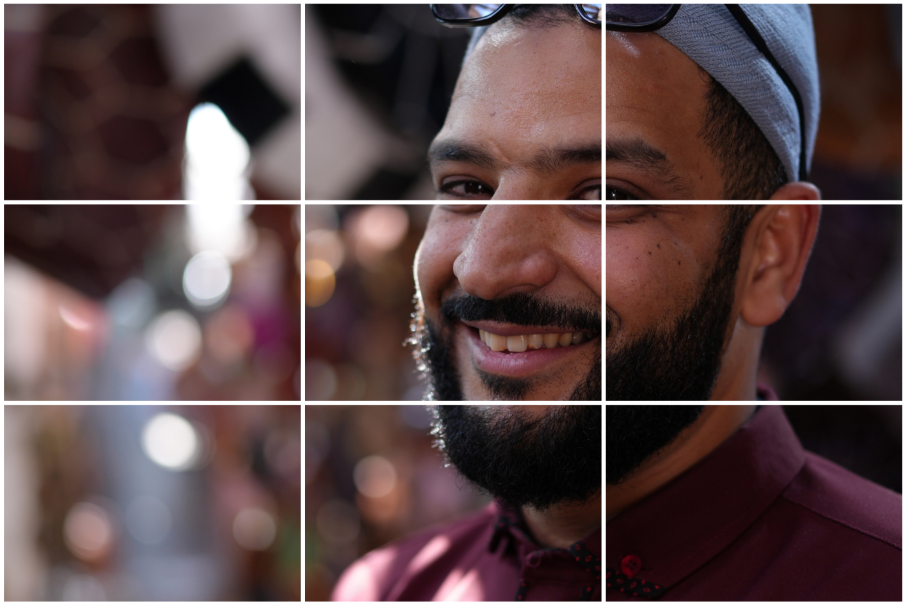
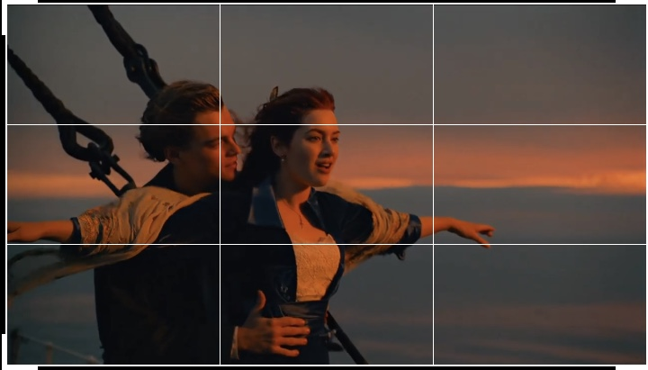
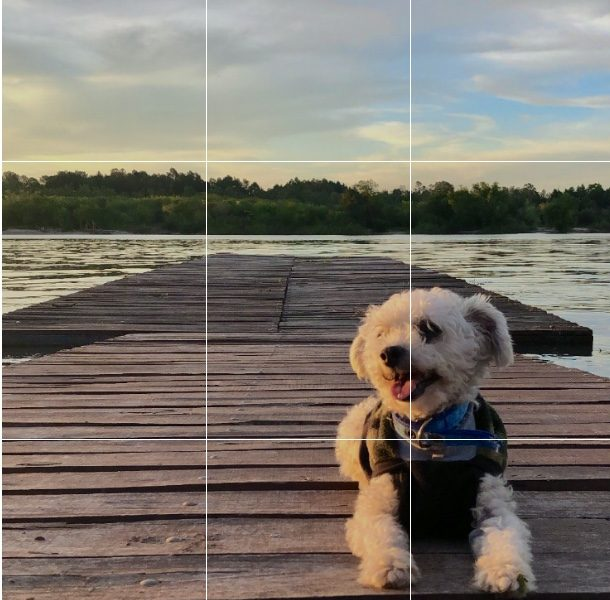
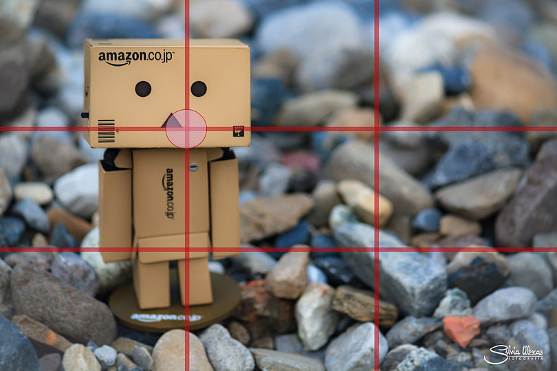

Fotografía de retrato
Se puede ubicar uno de los ojos cerca de una intersección superior para dar protagonismo al rostro y dejar espacio hacia donde mira la persona.

Paisajes
El horizonte puede colocarse sobre la línea horizontal superior o inferior, según se quiera destacar el cielo o el terreno.

Cine y video
Ayuda a ubicar personajes dentro del plano y a dejar espacio visual en la dirección de su mirada o movimiento.

Diseño e ilustración
Permite distribuir personajes, objetos, textos y espacios para guiar la mirada del espectador.

Publicidad y redes sociales
Puede ayudar a destacar un producto o una persona y reservar espacio para incorporar un mensaje o llamado a la acción.
Composición editorial
Sirve como referencia para organizar imágenes y elementos gráficos dentro de una página o una pieza visual.
